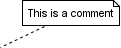
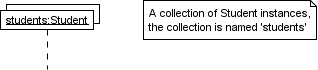
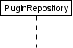

A Quick Introduction to UML Sequence Diagrams
This article introduces the commonly used elements of UML sequence diagrams and how to use them.
All diagrams in this article were created with Trace Modeler, an easy-to-use and smart editor for UML sequence diagrams developed by the author. Check out the 30 sec demo to see how easy it really is..
UML Sequence Diagrams
UML sequence diagrams are used to show how objects interact in a given situation. An important characteristic of a sequence diagram is that time passes from top to bottom : the interaction starts near the top of the diagram and ends at the bottom (i.e. Lower equals Later).
A popular use for them is to document the dynamics in an object-oriented system. For each key collaboration, diagrams are created that show how objects interact in various representative scenarios for that collaboration.
A typical sequence diagram :

The diagram above shows how objects interact in the "rent item" collaboration when the item is not available during the requested period.
To clarify how execution switches from one object to another, a blue highlight was added to represent the flow of control. Note that this highlight is not part of the diagram itself.
As with all UML diagrams, comments are shown in a rectangle with a folded-over corner :

To relate the comment to whatever diagram elements it is about, connect them with dashed lines.
Targets
Objects as well as classes can be targets on a sequence diagram, which means that messages can be sent to them. A target is displayed as a rectangle with some text in it. Below the target, its lifeline extends for as long as the target exists. The lifeline is displayed as a vertical dashed line.
Object
The basic notation for an object is

Where 'name' is the name of the object in the context of the diagram and 'Type' indicates the type of which the object is an instance. Note that the object doesn't have to be a direct instance of Type, a type of which it is an indirect instance is possible too. So 'Type' can be an abstract type as well.
Both name and type are optional, but at least one of them should be present. Some example :

As with any UML-element, you can add a stereotype to a target. Some often used stereotypes for objects are «actor», «boundary», «control», «entity» and «database». They can be displayed with icons as well :

An object should be named only if at least one of the following applies
- You want to refer to it during the interaction as a message parameter or return value
- You don't mention its type
- There are other anonymous objects of the same type and giving them names is the only way to differentiate them
Try to avoid long but non-descriptive names when you're also specifying the type of the object (e.g. don't use 'aStudent' for an instance of type Student). A shorter name carries the same amount of information and doesn't clutter the diagram (e.g. use 's' instead).
MultiObject
When you want to show how a client interacts with the elements of a collection, you can use a multiobject. Its basic notation is

Again, a name and/or type can be specified. Note however that the 'Type' part designates the type of the elements and not the type of the collection itself.
Class
The basic notation for a class is

Only class messages (e.g. shared or static methods in some programming languages) can be sent to a class. Note that the text of a class is not underlined, which is how you can distinguish it from an object.
Messages
When a target sends a message to another target, it is shown as an arrow between their lifelines. The arrow originates at the sender and ends at the receiver. Near the arrow, the name and parameters of the message are shown.
Synchronous message
A synchronous message is used when the sender waits until the receiver has finished processing the message, only then does the caller continue (i.e. a blocking call). Most method calls in object-oriented programming languages are synchronous. A closed and filled arrowhead signifies that the message is sent synchronously.

The white rectangles on a lifeline are called activations and indicate that an object is responding to a message. It starts when the message is received and ends when the object is done handling the message.
When a messages are used to represent method calls, each activation corresponds to the period during which an activation record for its call is present on the call stack.
If you want to show that the receiver has finished processing the message and returns control to the sender, draw a dashed arrow from receiver to sender. Optionally, a value that the receiver returns to the sender can be placed near the return arrow.

If you want your diagrams to be easy to read, only show the return arrow if a value is returned. Otherwise, hide it.
Instantaneous message
Messages are often considered to be instantaneous, i.e. the time it takes to arrive at the receiver is negligible. For example, an in-process method call. Such messages are drawn as a horizontal arrow.

Sometimes however, it takes a considerable amount of time to reach the receiver (relatively speaking of course) . For example, a message across a network. Such a non-instantaneous message is drawn as a slanted arrow.

You should only use a slanted arrow if you really want to emphasize that a message travels over a relatively slow communication channel (and perhaps want to make a statement about the possible delay). Otherwise, stick with a horizontal arrow.
Found message
A found message is a message of which the caller is not shown. Depending on the context, this could mean that either the sender is not known, or that it is not important who the sender was. The arrow of a found message originates from a filled circle.

Asynchronous messages
With an asynchronous message, the sender does not wait for the receiver to finish processing the message, it continues immediately. Messages sent to a receiver in another process or calls that start a new thread are examples of asynchronous messages. An open arrowhead is used to indicate that a message is sent asynchrously.

A small note on the use of asynchronous messages : once the message is received, both sender and receiver are working simultaneously. However, showing two simultaneous flows of control on one diagram is difficult. Usually authors only show one of them, or show one after the other.
Message to self
A message that an object sends itself can be shown as follows :

Keep in mind that the purpose of a sequence diagram is to show the interaction between objects, so think twice about every self message you put on a diagram.
Creation and destruction
Targets that exist at the start of an interaction are placed at the top of the diagram. Any targets that are created during the interaction are placed further down the diagram, at their time of creation.

A target's lifeline extends as long as the target exists. If the target is destroyed during the interaction, the lifeline ends at that point in time with a big cross.
Conditional interaction
A message can include a guard, which signifies that the message is only sent if a certain condition is met. The guard is simply that condition between brackets.

If you want to show that several messages are conditionally sent under the same guard, you'll have to use an 'opt' combined fragment. The combined fragment is shown as a large rectangle with an 'opt' operator plus a guard, and contains all the conditional messages under that guard.

A guarded message or 'opt' combined fragment is somewhat similar to the if-construct in a programming language.
If you want to show several alternative interactions, use an 'alt' combined fragment. The combined fragment contains an operand for each alternative. Each alternative has a guard and contains the interaction that occurs when the condition for that guard is met.

At most one of the operands can occur. An 'alt' combined fragment is similar to nested if-then-else and switch/case constructs in programming languages.
Repeated interaction
When a message is prefixed with an asterisk (the '*'-symbol), it means that the message is sent repeatedly. A guard indicates the condition that determines whether or not the message should be sent (again). As long as the condition holds, the message is repeated.

The above interaction of repeatedly sending the same message to the same object is not very useful, unless you need to document some kind of polling scenario.
A more common use of repetition is sending the same message to different elements in a collection. In such a scenario, the receiver of the repeated message is a multiobject and the guard indicates the condition that controls the repetition.

This corresponds to an iteration over the elements in the collection, where each element receives the message. For each element, the condition is evaluated before the message is sent. Usually though, the condition is used as a filter that selects elements from the collection (e.g. 'all', 'adults', 'new customers' as filters for a collection of Person objects). Only elements selected by the filter will receive the message.
If you want to show that multiple messages are sent in the same iteration, a 'loop' combined fragment can be used. The operator of the combined fragment is 'loop' and the guard represents the condition to control the repetition.

Again, if the receiver of a repeated message is a collection, the condition is generally used to specify a filter for the elements.
For example, to show that the bounds of a drawing are based on those of its visible figures we could draw the following sequence diagram :

Several things are worth noting in this example
- a local variable 'r' was introduced to clarify that it is the result of getBounds that is added.
- naming the resulting Rectangle 'bounds' avoids the introduction of an extra local variable.
- the loop condition is used as a filter on the elements of the figures collection.
Tool support
Of all the UML diagram types, the sequence diagram type is the one where it matters most to choose the right tool for the job. The reason being that you have very little freedom when it comes to positioning elements on a sequence diagram :
- some elements must be placed in a certain region
- some elements must surround others
- many elements are interconnected
- most elements have a fixed orientation
- the grid-like structure practically demands a uniform spacing
- there are plenty of opportunities for elements to overlap in a bad way
You really need a tool that was designed with sequence diagrams in mind. Don't even think about using a general-purpose drawing tool, you'll waste hours connecting, resizing and laying out shapes.
With that many constraints you would think that current tools take care of the layout for you, right? Think again.
Most UML-based CASE tools offer only basic support for sequence diagrams and have low usability. Although they're an improvement over general-purpose editors, they offer little assistance when it comes to layout issues and you'll still waste a lot of time moving elements around.
When you evaluate a tool, find out how it reacts when you change an existing diagram. Add stuff, move elements around and look at the resulting diagram. Is it still a visually pleasing diagram, or do you have to step in and manually redo the layout?
| A checklist of things to try when you're evaluating a tool for sequence diagrams | |
|---|---|
|
Add a new message. Did you have to connect arrows and activations by hand? |
|
|
Move a target all the way to the left or right. Are the message arrows still connected to the correct side of their activations? |
|
|
Insert a new message in the middle of the diagram. Were the existing elements below it automatically moved down to make space for it? |
|
|
Change the receiver of a message. Did the activations and arrows adjust themselves accordingly? Even when you made it into a message to self? |
|
|
Move a message or an activation up or down. Were they and the elements around them adjusted accordingly or did you have to do that yourself? |
|
|
Move a message in and out of a combined fragment. Was the fragment automatically resized and moved in correspondence to its contents? |
|
|
Scroll down so that the targets are no longer visible. Does the tool provide any hints as to which lifeline belongs to which target? |
|
|
Change the name of a message. Did you edit it in-place on the diagram itself? |
|
Pick the tool with the best automatic layout features, it will save you an enormous amount of time.
I never quite found what I was looking for and ended up creating my own. Trace Modeler supports all of the above and has some really neat layout features and benefits that I haven't seen anywhere else, I invite you to watch the demo and then try it yourself!
|
|
In closing...
This quick introduction discussed only a few of the possible constructs you may encounter on a UML sequence diagram.
As you set off to find out all there is to know about UML sequence diagrams, bear in mind that it is more important to know when and how to use them, than to know every possible construct in the UML specification.
You can find out more about the when and how of sequence diagrams in a forthcoming article...
Be sure to take a peek in the gallery section, it contains many examples of sequence diagrams - all created with Trace Modeler of course.
Feel free to discuss the contents of this article and give feedback in the discussion forum, or read one of the other articles. You can also subscribe to the feed to receive notification when new articles and diagrams are added.
When you've reached this point in the text, you should be able to
understand most sequence diagrams. You're also a very persistent
reader! I leave you with a final thought : the subject of a sequence
diagram doesn't have to be an interaction in a software system, any
kind of interaction will do. For example, take a close look at the
following diagram 

Article copyright © Yanic Inghelbrecht 2007, www.tracemodeler.com | last updated on 11/06/2007